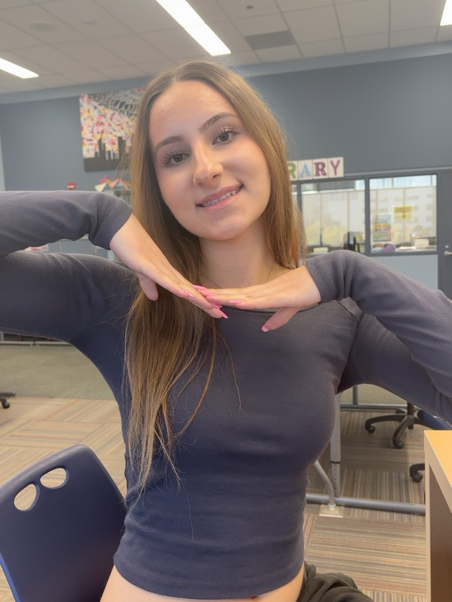

Ana Milosevic

Education
Jones College Prep
Chicago, Illinois
Expected Graduation: 2027
Unweighted GPA: 3.95
Coursework (relevant)
- AP Calculus BC
- AP Computer Science A
- AP Computer Science Principles
- AP Cybersecurity
- Data Structures and Algorithms
Work Experience:
Rita's Italian Ice
Team Member | May 2026 - Present
- Serve customers and prepare orders in a fast-paced environment
- Handle customer transactions and maintain a clean work area
- Work with team members to provide efficient customer service
Chicago Waffles
Hostess, Expo, and Food Runner | June 2026 - Present
- Welcome guests and assist with restaurant seating and organization
- Prepare completed orders for servers and help deliver food to guests
- Communicate with coworkers to keep service running efficiently
Leadership and Activities
- National Honor Society
- National Science Honor Society
- Co-President and Founder of Balkan Club
- Girls Who Code program participant
- Teaching Assistant for mathematics and computer science courses
Honors and Awards
- AP Scholar with Distinction
- College Board School Recognition Award
- College Board First-Generation Recognition Award
Skills and Interests
- Programming and computer science
- Mathematics
- English and Serbian
- French
- Communication and customer service